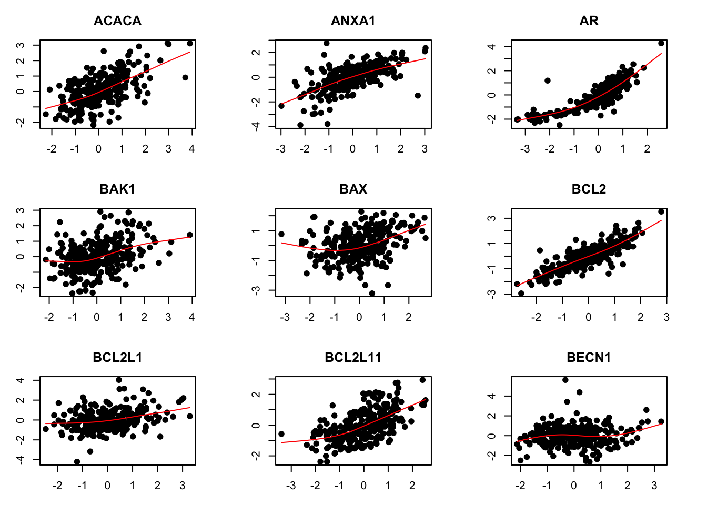

mir <- read.table("lab/data/miRNA-421x282.txt", header=T, sep="\t", dec=".")
rna <- read.table("lab/data/mRNA-100x282.txt", header=T, sep="\t", dec=".")
prt <- read.table("lab/data/prot-100x282.txt", header=T, sep="\t", dec=".")
# Convert to matrix format
mir <- as.matrix(mir)
rna <- as.matrix(rna)
prt <- as.matrix(prt)R Lab - Part I
A Cancer Modeling Example
See StatPrinciples_RLab.pdf for some background info.
Exercise on analysis of miRNA, mRNA and protein data from the paper Aure et al, Integrated analysis reveals microRNA networks coordinately expressed with key proteins in breast cancer, Genome Medicine, 2015.
Please run the code provided to replicate some of the analyses in Aure et al. (2015). Make sure you can explain what all the analysis steps do and that you understand all the results.
In addition, there are three extra tasks Task 1, Task 2, Task 3, where no R code is provided. Please do these tasks when you have time available at the end of the lab.
Load the data
Read the data, and convert to matrix format.
Print the data
mir[1:4, 1:4] OSL2R.3002T4 OSL2R.3005T1 OSL2R.3013T1 OSL2R.3030T2
hsa-let-7a -1.10330 0.40033 -0.65364 0.78277
hsa-let-7a* -0.58049 -0.72246 1.46023 -0.67980
hsa-let-7b -3.17134 0.41602 -0.13054 1.11872
hsa-let-7c -3.10923 0.27861 -0.17365 0.47395rna[1:4, 1:4] OSL2R.3002T4 OSL2R.3005T1 OSL2R.3013T1 OSL2R.3030T2
ACACA 1.60034 -0.49087 -0.26553 -0.27857
ANXA1 -2.42501 -0.05416 -0.46478 -2.18393
AR 0.39615 -0.43348 -0.10232 0.58299
BAK1 0.78627 0.39897 0.22598 -1.31202prt[1:4, 1:4] OSL2R.3002T4 OSL2R.3005T1 OSL2R.3013T1 OSL2R.3030T2
ACACA 0.48181 -0.76244 0.22878 0.02493
ANXA1 -0.37323 0.52558 0.73313 -1.60107
AR 1.39394 -0.33711 0.07152 1.51886
BAK1 1.44828 1.26768 -0.32807 1.41299Visualise the overall distribution of expression levels by histogram
par(mfrow=c(3,1))
hist(mir, nclass=40, xlim=c(-5,5), col="lightblue")
hist(rna, nclass=40, xlim=c(-5,5), col="lightblue")
hist(prt, nclass=40, xlim=c(-5,5), col="lightblue")
mRNA-protein associations (only first nine genes)
par(mfrow=c(3,3))
par(mar=c(3,3,3,3))
for (i in 1:9) {
plot(rna[i,], prt[i,], pch=19)
title(rownames(rna)[i])
lines(smooth.spline(rna[i,], prt[i,], df=4), col="red")
}
Task 1
Extend the above analysis to cover all genes.
Explore the correlations
Compute and plot mRNA-protein correlations
rho = rep(NA, nrow(rna))
for (i in 1:nrow(rna)) {
rho[i] = cor(rna[i,], prt[i,])
}
par(mfrow=c(1,1))
hist(rho, col="lightblue")
Calculate the correlation of each miRNA to each protein
RHO = matrix(NA, nrow(mir), nrow(prt))
for (i in 1:nrow(mir)) {
for (j in 1:nrow(prt)) {
RHO[i,j] = cor(mir[i,], prt[j,])
}
}
par(mfrow=c(1,1))
hist(RHO, col="lightblue")Visualize as heatmap
Use the code provided to visualize the heatmap.
source("lab/code/clustermap_beta.R")
plot.init(tree=c(2,3))
hcluster(RHO, clust="row", distance="euclidean", linkage="complete")
hcluster(RHO, clust="col", distance="euclidean", linkage="complete")
plot.hmap(RHO)
plot.tree(side=2)
plot.tree(side=3)
plot.hmap.key()
Task 2
Compare this heatmap with Figure 3 in Aure et al. (2015). Are these two figures showing the same results?